En la lección Historia de Python se comentan las diferentes versión de Python existentes. En esta lección se comenta cómo conseguir e instalar la versión recomendada para seguir este curso.
Python permite tener instaladas distintas versiones de Python (por ejemplo, Python 3.10 y Python 3.11).
En este curso se recomienda tener instalada únicamente una versión de Python, la más reciente. Por ello, si va a instalar una versión de Python 3.11:
si ya tiene instalada una versión anterior (Python 3.10 o anteriores) y no necesita mantenerla, se recomienda desinstalar primero la versión anterior.
si ya tiene instalada una versión de Python 3.11, no es necesario desinstalar nada, pero se recomienda actualizar a la última versión disponible de Python 3.11.
Nota: Tenga en cuenta que al instalar una nueva versión de Python es necesario reinstalar todos los módulos y bibliotecas que se hubieran instalado en la versión anterior si se quieren utilizar en la nueva versión.
Página de descarga de Python 3.11.3, desde la que se pueden descargar otros instaladores (por ejemplo, para Windows de 32 bits).
En cdlibre.org hay una sección dedicada al intérprete de Python, con información detallada sobre las últimas versiones publicadas para Windows.
Instalar Python
Una vez descargado el instalador, haga doble clic en él para iniciar la instalación.
Nota: Las imágenes siguientes corresponden a la instalación de Python 3.11.0 (64 bits), pero son similares en cualquier versión 3.X.
La primera pantalla permite seleccionar las opciones de instalación haciendo clic en "Customize installation", aunque en principio, no es necesario modificarlas. Tan sólo se aconseja marcar la casilla "Add Python 3.11 to PATH" para poder ejecutar programas desde la línea de comandos. Para continuar, haga clic en "Install Now".
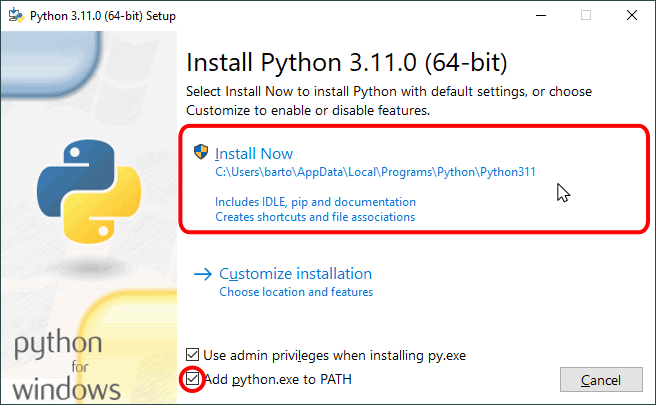
A continuación se iniciará el proceso de instalación. La instalación de Python puede durar varios minutos.
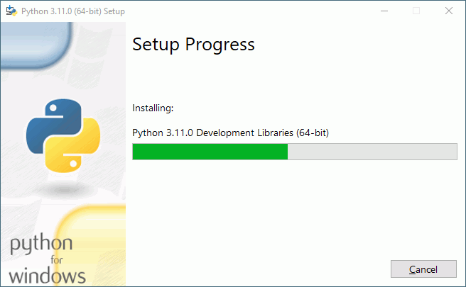
Una vez completada la instalación, se mostrará la pantalla final.
Si el instalador detecta que Windows tiene activado el límite de 260 caracteres de rutas de archivos (una limitación de versiones antiguas de Windows que se mantiene por compatibilidad con aplicaciones antiguas), le ofrecerá la opción de eliminar la limitación. Si utiliza alguna aplicación que necesite tener ese límite activado, no lo desactive. En caso contrario, haga clic en el botón "Disable path length limit". Si en el futuro descubriera que alguna aplicación necesita tener el límite activado, abra el editor del registro de Windows y modifique la clave HKEY_LOCAL_MACHINE\SYSTEM\CurrentControlSet\Control\FileSystem\LongPathsEnabled (el valor 0 significa que el límite está desactivado y 1 significa que está activado).
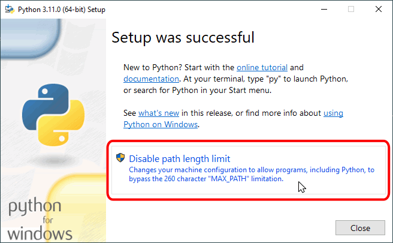
Finalmente, haga clic en en el botón "Close" para cerrar el programa de instalación. ¡Ya puede empezar a programar en Python!
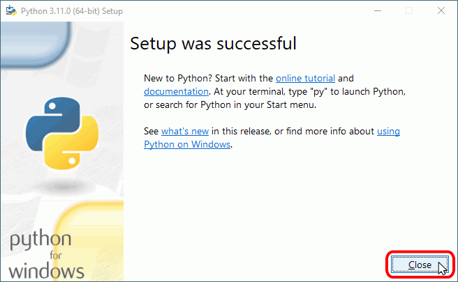
Actualizar Python
Una vez descargado el instalador, haga doble clic en él para iniciar la actualización. Si el instalador detecta una subversión anterior de la misma versión de Python (por ejemplo si el instalador de Python 3.11.X detecta que está instalado un Python 3.11.X anterior), ofrecerá la opción de actualizar.
Nota: Las imágenes siguientes corresponden a la instalación de Python 3.11.1 (64 bits), pero son similares en cualquier versión 3.X.
La primera pantalla permite seleccionar las opciones de instalación haciendo clic en "Customize installation", aunque en principio, no es necesario modificarlas. Para continuar, haga clic en "Upgrade Now".
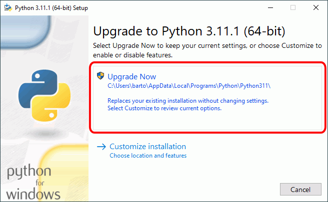
A continuación se iniciará el proceso de actualización. La actualización de Python puede durar varios minutos.
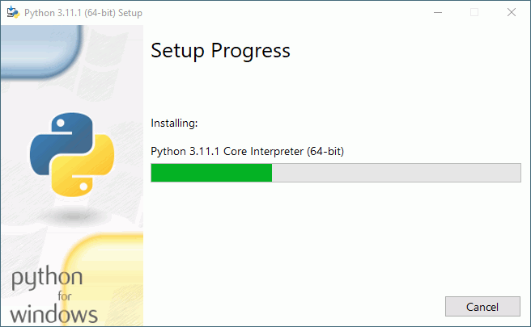
Una vez completada la actualización, se mostrará la pantalla final. Haciendo clic en en el botón "Close" se cerrará el programa de instalación.
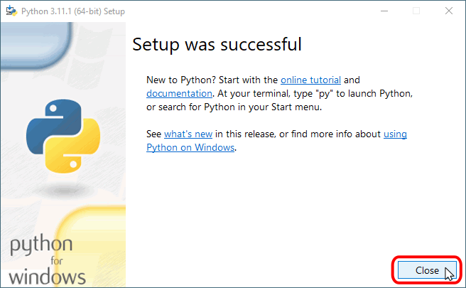
Modificar o reparar Python
Si el instalador detecta que ya está instalada la misma versión de Python (por ejemplo si el instalador de Python 3.11.1 detecta que ya está instalado Python 3.11.1), ofrecerá la opción de modificar, reparar o desinstalar Python.
Nota: La imagen siguiente corresponde al instalador de Python 3.11.1 (64 bits), pero es similar en cualquier versión 3.X.
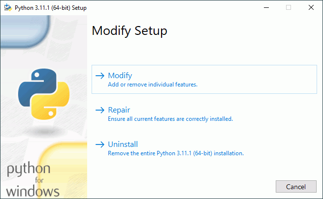
Antes de reparar la instalación, se recomienda comprobar las opciones elegidas.
Para ello, haga clic en "Modify":
En la pantalla "Optional Features", compruebe que están marcadas todas las casilla y haga clic en "Next":
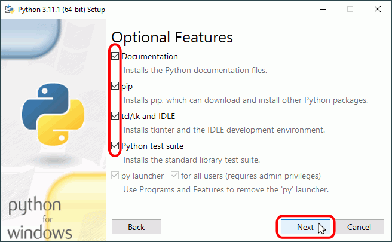
En la pantalla "Advanced Options", compruebe que están marcadas las tres primeras casillas y haga clic en "Install":
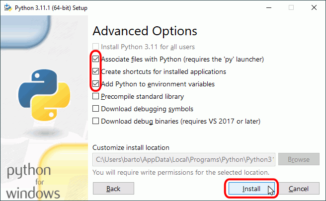
Una vez realizada la modificación/reparación, se mostrará la pantalla final. Haciendo clic en en el botón "Close" se cerrará el programa de instalación.
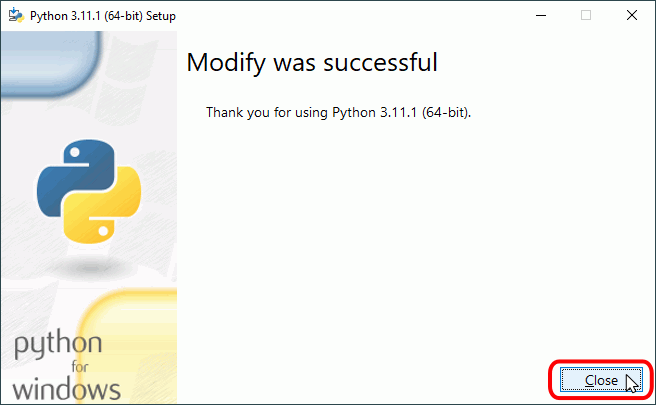
Actualizar pip
A lo largo de su historia, Python ha utilizado varios sistemas para la distribución de módulos:
distutils fue el primer sistema incluido en la biblioteca estándar en 1998 y sigue siendo la base de los sistemas posteriores. Desde Python 2.7, no se recomienda usarlo directamente. En Python 3.12 ya no formará parte de la biblioteca estándar [referencia: PEP 632].
setuptools fue el sistema introducido en 2004. Aunque todavía se mantiene, no se aconseja su uso desde la línea de comandos. Desde octubre de 2021 el uso de los comandos setup.py install y easy_install están desaconsejados [referencia: setuptools 58.3.0 release notes].
pip es el instalador "oficial" actual. Desde 2014 (Python 3.4), el módulo pip se instala junto con Python.
Aunque pip se instala con Python, pip se desarrolla de forma independiente, así que es conveniente actualizar pip periódicamente.
Nota: Los ejemplos siguientes corresponden a la versión pip 22.3, que se instalaba junto con Python 3.11, actualizada a la versión 22.3.1, publicada en noviembre de 2022, pero son similares en versiones posteriores. Las versiones de Python suelen incluir la versión más reciente de pip en el momento de la publicación.
Para saber la versión de pip instalada, ejecute en una ventana de terminal la orden: pip --version
pip --version
pip 22.3 from C:\Users\barto\AppData\Local\Programs\Python\Python311\Lib\site-packages\pip (python 3.11)
Para saber los paquetes instalados, ejecute en una ventana de terminal la orden: pip list
pip list
Package Version
---------- -------
pip 22.3
setuptools 65.5.0
[notice] A new release of pip available: 22.3 -> 22.3.1
[notice] To update, run: python.exe -m pip install --upgrade pip
Para saber los paquetes instalados para los que existe una versión posterior, ejecute en una ventana de terminal la orden: pip list --outdated
pip list --outdated
Package Version Latest Type
---------- ------- ------ -----
pip 22.3 22.3.1 wheel
setuptools 65.5.0 65.6.3 wheel
[notice] A new release of pip available: 22.3 -> 22.3.1
[notice] To update, run: python.exe -m pip install --upgrade pip
Para actualizar pip, ejecute en una ventana de terminal la orden: python -m pip install --upgrade pip: